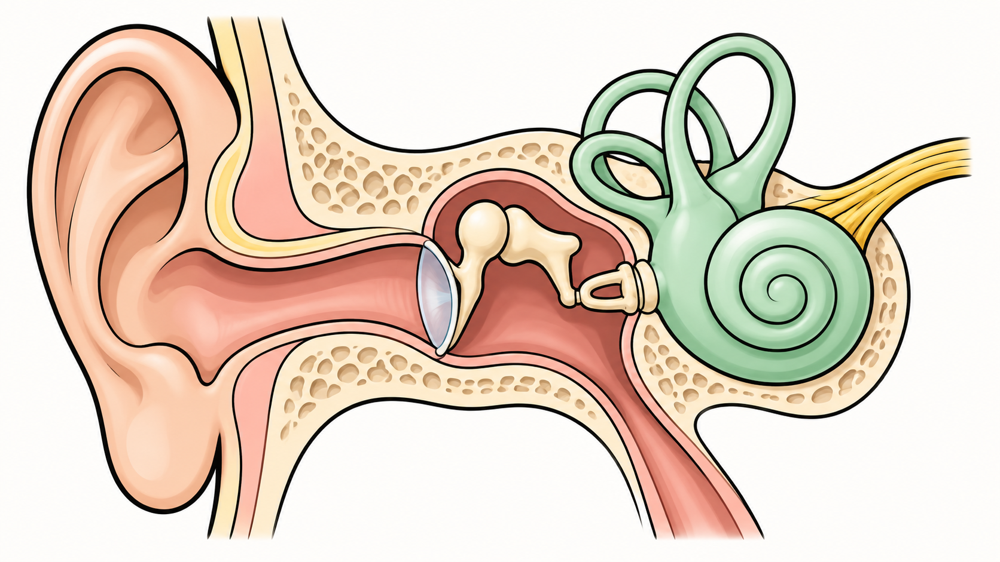

Изучение строения органа слуха (на 3D атласе)
Как расположены части уха и каким образом их строение обеспечивает восприятие звука? Исследование объёмной модели поможет установить взаимосвязи между структурами органа слуха.

Перед началом исследования
Орган слуха включает наружное, среднее и внутреннее ухо. Наружное ухо направляет звук к барабанной перепонке. В среднем ухе расположены три слуховые косточки, передающие её колебания во внутреннее ухо. В улитке находятся чувствительные клетки, преобразующие механическое воздействие в нервные сигналы.
Как работать с моделью
Вращение позволяет рассматривать структуры с разных сторон, приближение — исследовать мелкие детали. При наличии панели объектов можно скрывать отдельные слои.
Что необходимо установить
Не только названия структур, но и их положение друг относительно друга, связи между отделами и путь проведения звуковых колебаний.
3D-атлас органа слуха
Изучите модель, поворачивая её и увеличивая необходимые участки. Для точного поиска слуховых косточек и внутреннего уха используйте доступные ракурсы и подписи модели, если они предусмотрены.
Ход работы
Наружное ухо
Найдите на модели наружное ухо. Определите ушную раковину, наружный слуховой проход и барабанную перепонку. Укажите, какая структура расположена на границе наружного и среднего уха.
Среднее ухо
Найдите молоточек, наковальню и стремечко. Рассмотрите их расположение относительно барабанной перепонки и внутреннего уха. Укажите порядок расположения слуховых косточек от наружного уха к внутреннему.
Слуховая (евстахиева) труба
Найдите слуховую трубу. Определите, с какой областью она соединяет полость среднего уха. Объясните, почему для работы барабанной перепонки важно выравнивание давления воздуха по обе её стороны.
Внутреннее ухо
Найдите структуры внутреннего уха: улитку, преддверие и полукружные каналы. Определите расположение улитки относительно слуховых косточек. Найдите нервные волокна, передающие слуховую информацию в головной мозг.
Путь звуковых колебаний
Восстановите пропущенные звенья последовательности. Запишите полную цепочку в тетрадь.
Дополнительно укажите, в какой части органа слуха механические колебания преобразуются в нервные сигналы.
Функции слуховых косточек
Объясните, для чего необходимы молоточек, наковальня и стремечко. Почему звуковые колебания передаются от барабанной перепонки к структурам внутреннего уха именно через эту цепочку?
Вывод
Сформулируйте вывод о связи строения органа слуха с выполняемой им функцией. В ответе необходимо отразить роль каждого из трёх отделов уха, слуховых косточек, рецепторов улитки и слухового нерва.